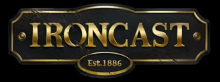

Ironcast
A steampunk mech themed block matching game.

In Ironcast, you play as one of several Victorian era English commanders who pilot giant mechanical walkers and defend London in a war against the advancing French forces.
The campaign mode is set in the final days of the war, with each run consisting of nine missions that range from securing supplies to defending an outpost to taking down a rogue mech.
Each mission usually affords you enough XP to level up your commander, which provides a choice between one of three useful perks. After participating in a punishing boss battle, experience points are distributed and your profile levels up. This unlocks new commanders, mech suits, and loot drops for the next run.
0 comments
Be the first to leave a comment!